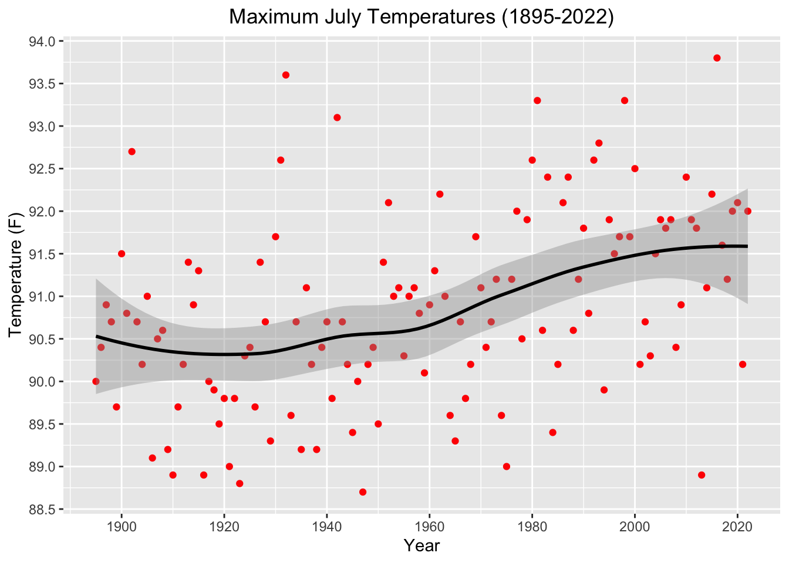
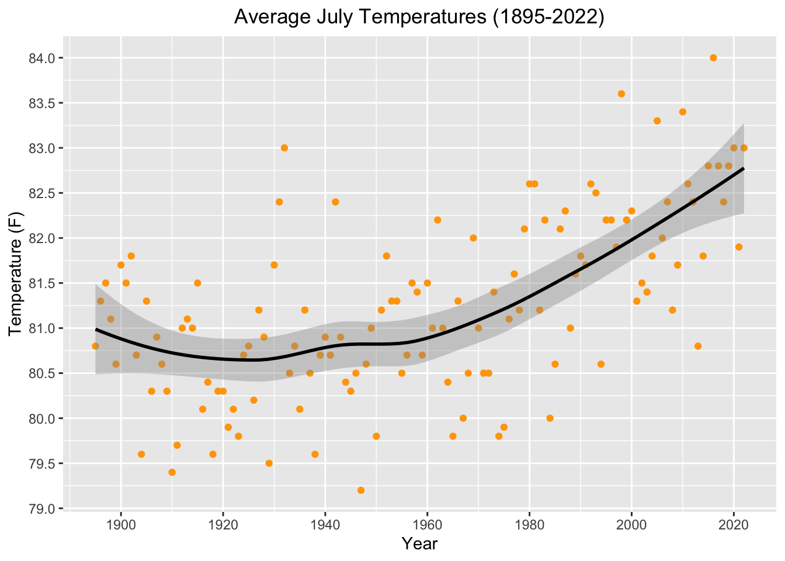
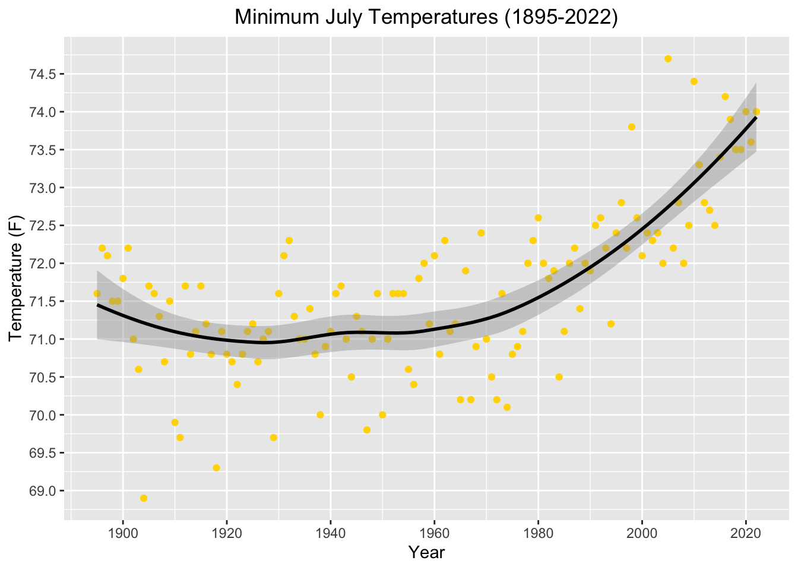

Code
library(tidyverse)
library(tidyquant)
library(ggplot2)
library(forecast)
library(astsa)
library(xts)
library(tseries)
library(lubridate)
library(plotly)
library(kableExtra)
library(dplyr)In this section, I want to use time series analysis in the form of time series plots and visualizations to analyze if Florida’s minimum, maximum, and average temperature has changed over the years, and, if it has, to what extent it has changed. Although more analysis will need to be done later to determine the significance of these changes, starting with a visual approach will allow for immediate notice of trends over time.
The goal of this first set of visualizations ties back to the following questions listed out in the Guiding Questions for Analysis listed out in the Introduction page of this project:
To begin to answer these questions, I will be looking at temperature changes observed during the month of December specifically.
library(tidyverse)
library(tidyquant)
library(ggplot2)
library(forecast)
library(astsa)
library(xts)
library(tseries)
library(lubridate)
library(plotly)
library(kableExtra)
library(dplyr)As highlighted in the Data Sources tab of this project, the minimum, maximum, and monthly average temperatures from 1895-2022 in Florida are spread across three different datasets from NOAA’s National Centers for Environmental Information. The first thing I need to do is combine this information into one cohesive data frame that can be used for analysis.
#Reading in all three datasets:
avg.temp = read.csv("datasets/temperature/Avg_Temp_1895-2022.csv")
min.temp = read.csv("datasets/temperature/Min_Temp_1895-2022.csv")
max.temp = read.csv("datasets/temperature/Max_Temp_1895-2022.csv")
#For each, remove the first three rows and the last column, as these are not useful for this analysis
avg.temp = avg.temp[-(1:4),]
avg.temp = avg.temp %>% select(-December)
min.temp = min.temp[-(1:4),]
min.temp = min.temp %>% select(-December)
max.temp = max.temp[-(1:4),]
max.temp = max.temp %>% select(-December)
#Join all dataframes together
temp.combo = list(avg.temp, min.temp, max.temp)
temp.combo = temp.combo %>% reduce(full_join, by='Florida')
#Rename 'Florida' column as Date
temp.combo = temp.combo %>% rename("Date" = "Florida")
# Change Date from character to actual date-time structure
temp.combo$Date = as.Date(paste0(as.character(temp.combo$Date), '01'), format = '%Y%m%d')A table of the first ten values of the combined temperature dataframe can be seen below. (Note that the date will always say “December 1st” of each month to ensure this is in proper datetime format - it is not necessarily the case that these temperatures (in the case of min and max) were observed on the first of each December.):
kable(head(temp.combo, 10), align = 'c') %>%
kable_styling(font_size = 13) %>%
row_spec(0, bold = TRUE, color = "white", background = "darkblue")| Date | Average.Temperature | Minimum.Temperature | Maximum.Temperature |
|---|---|---|---|
| 1895-12-01 | 55.4 | 43.9 | 66.8 |
| 1896-12-01 | 56.4 | 45.9 | 66.8 |
| 1897-12-01 | 59.0 | 48.1 | 69.9 |
| 1898-12-01 | 56.5 | 46.7 | 66.3 |
| 1899-12-01 | 57.6 | 46.7 | 68.6 |
| 1900-12-01 | 57.3 | 47.8 | 66.9 |
| 1901-12-01 | 55.6 | 44.2 | 67.0 |
| 1902-12-01 | 59.2 | 48.2 | 70.2 |
| 1903-12-01 | 52.2 | 38.9 | 65.4 |
| 1904-12-01 | 57.0 | 45.6 | 68.3 |
require(dplyr)
require(plotly)
figure = plot_ly(x = ~temp.combo$Date, y= ~temp.combo$Average.Temperature) %>%
add_lines(y = temp.combo$Maximum.Temperature, name = "Maximum Temperature") %>%
add_lines(y = temp.combo$Average.Temperature, name = "Average Temperature") %>%
add_lines(y = temp.combo$Minimum.Temperature, name = "Minimum Temperature") %>%
layout(xaxis = list(title = "Year"), yaxis=list(title="Temperature (F)"), title = "December Temperatures in Florida (1895-2022)",
legend = list(x=100, y = 0.5))
figureOverall, it’s a bit hard to tell from this data visualization alone whether or not December temperatures on average across Florida have risen significantly. What we can see, however, are years with especially cold or especially warm December in the state. For example, 1931 and 2015 have the two highest maximum, minimum, and average temperatures across the entire dataset, while the coldest December on record was actually in 2010, followed by 1903.
Interestingly enough, a quick search on Florida 2010 December yields a number of results, each reporting the year as the “Coldest December on Record”, according to a report from NOAA’s 2014 South Florida Weather Year in Review. In this report, they discuss that 2010 overall was a year of extremes, with the summer earlier in the year being recorded as the hottest summer in South Florida history at that time.
Through using plotly, I was able to learn a bit more about Florida’s temperature and climate. Overall, it seems like the minimum, maximum, and average temperatures during the winter have not changed all that much since 1895. However, the plot encouraged some additional exploration into December 2010 in the state, after which I learned that the same year that saw record low temperatures during the winter also saw record high temperatures during the summer. This prompted further exploration into Florida’s hottest month of the year, July, to answer my guiding questions for this project.
As with the December temperature data before, the July temperature date must be cleaned and combined into something usable and clean for analysis.
#Reading in all three datasets:
avg.jul.temp = read.csv("datasets/temperature/July_Avg_Temp_1895-2022.csv")
min.jul.temp = read.csv("datasets/temperature/July_Min_Temp_1895_2022.csv")
max.jul.temp = read.csv("datasets/temperature/July_Max_Temp_1895-2022.csv")
#For each, remove the first three rows and the last column, as these are not useful for this analysis
avg.jul.temp = avg.jul.temp[-(1:4),]
avg.jul.temp = avg.jul.temp %>% select(-July)
min.jul.temp = min.jul.temp[-(1:4),]
min.jul.temp = min.jul.temp %>% select(-July)
max.jul.temp = max.jul.temp[-(1:4),]
max.jul.temp = max.jul.temp %>% select(-July)
#Join all dataframes together
jul.temp.combo = list(avg.jul.temp, min.jul.temp, max.jul.temp)
jul.temp.combo = jul.temp.combo %>% reduce(full_join, by='Florida')
#Rename 'Florida' column as Date
jul.temp.combo = jul.temp.combo %>% rename("Date" = "Florida")
# Change Date from character to actual date-time structure
#jul.temp.combo$Date = as.Date(paste0(as.character(jul.temp.combo$Date), '01'), format = '%Y%m%d')
jul.temp.combo$Date = substr(jul.temp.combo$Date, 1,4)
#Converting characters to numeric for use in ggplot
jul.temp.combo$Date = as.numeric(jul.temp.combo$Date)
jul.temp.combo$Average.Temperature = as.numeric(jul.temp.combo$Average.Temperature)
jul.temp.combo$Maximum.Temperature = as.numeric(jul.temp.combo$Maximum.Temperature)
jul.temp.combo$Minimum.Temperature = as.numeric(jul.temp.combo$Minimum.Temperature)The first ten values of the July temperature dataframe can be seen below:
kable(head(jul.temp.combo, 10), align = 'c') %>%
kable_styling(font_size = 13) %>%
row_spec(0, bold = TRUE, color = "black", background = "darkorange")| Date | Average.Temperature | Minimum.Temperature | Maximum.Temperature |
|---|---|---|---|
| 1895 | 80.8 | 71.6 | 90.0 |
| 1896 | 81.3 | 72.2 | 90.4 |
| 1897 | 81.5 | 72.1 | 90.9 |
| 1898 | 81.1 | 71.5 | 90.7 |
| 1899 | 80.6 | 71.5 | 89.7 |
| 1900 | 81.7 | 71.8 | 91.5 |
| 1901 | 81.5 | 72.2 | 90.8 |
| 1902 | 81.8 | 71.0 | 92.7 |
| 1903 | 80.7 | 70.6 | 90.7 |
| 1904 | 79.6 | 68.9 | 90.2 |
Attaching package: 'scales'The following object is masked from 'package:purrr':
discardThe following object is masked from 'package:readr':
col_factor
When plotting all three lines together as seen above, it’s a bit hard to notice any clear increases or decreases. At first glance it seems that the maximum temperature each July has not changed all that much, while the average temperature has change slightly, and the minimum temperature appears to be increasing since around the 1980s. To be certain, I want to plot each temperature series as a separate scatter plot, and then use a trend line to determine for sure how the temperature has changed since 1895. The following trend lines are calculated using LOESS, or locally estimated scatterplot smoothing.
Looking at the three plots below, we can see that the maximum, average, and minimum temperatures have all increased over time. The most drastic increase is the minimum July temperature, which seems to have increased drastically since the 1980s.
scatter1 = ggplot() +
ggtitle("Maximum July Temperatures (1895-2022)")+
geom_point(data=jul.temp.combo, aes(x=Date, y=Maximum.Temperature), color = "red")+
geom_smooth(data=jul.temp.combo, aes(x=Date,y=Maximum.Temperature), color = "black")+
scale_x_continuous(breaks = scales::pretty_breaks(n=5))+scale_y_continuous(breaks=scales::pretty_breaks(n=10))+
xlab("Year") + ylab("Temperature (F)") + theme(plot.title = element_text(hjust = 0.5))
scatter2 = ggplot()+
ggtitle("Average July Temperatures (1895-2022)")+
geom_point(data=jul.temp.combo, aes(x=Date, y=Average.Temperature), color = "orange")+
geom_smooth(data=jul.temp.combo, aes(x=Date,y=Average.Temperature), color = "black")+
scale_x_continuous(breaks = scales::pretty_breaks(n=5))+scale_y_continuous(breaks=scales::pretty_breaks(n=10))+
xlab("Year") + ylab("Temperature (F)") + theme(plot.title = element_text(hjust = 0.5))
scatter3 = ggplot()+
ggtitle("Minimum July Temperatures (1895-2022)")+
geom_point(data=jul.temp.combo, aes(x=Date, y=Minimum.Temperature), color = "gold")+
geom_smooth(data=jul.temp.combo, aes(x=Date,y=Minimum.Temperature), color = "black")+
scale_x_continuous(breaks = scales::pretty_breaks(n=5))+scale_y_continuous(breaks=scales::pretty_breaks(n=10))+
xlab("Year") + ylab("Temperature (F)") + theme(plot.title = element_text(hjust = 0.5))
scatter1
scatter2
scatter3